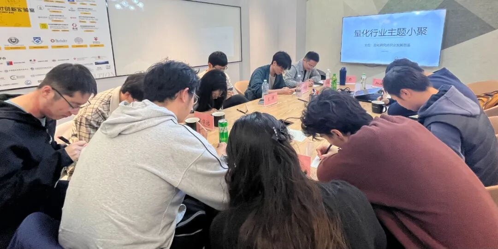

主题回顾
本次主题：量化研究员职业发展图鉴
主题背景：根据中国量化白皮书调查显示，行业内普遍认为做好 Quant 的关键素质先后顺序分别是：扎实的专业技能、聪明、快速领悟、对世界的认知、勤奋努力。聪明有助于单次研究的胜率，而努力则决定长期的水平。当下行业人均学历卷的不能再卷的情况下，还有什么因素推动了一个 Quant 从优秀走向卓越？
交流话题：1.从业者分享自己的职业生涯，如工作内容、职业发展等？2.lgbm 因子组合模型？3.端到端选股神经网络的训练，与因子择时是否有必要做？4.品种个数较少的 cta 策略在进行因子组合时是否有必要在因子和品种两个维度都进行权重的调整？5.大家对于另类因子发掘的经验交流？6.应届生头部私募求职经验。1.从业者分享自己的职业生涯，如工作内容、职业发展等？2.量化私募中的结构研究与高频量化的券商角色？3.如何结合不同因子（如不同频率、类型）才是最优的？4.深度学习与ChatGPT大语言模型在指增模型的应用？5.策略组合优化如何起步、股票Level2数据识别算法交易的相关问题？
小聚成员
本次活动根据大家填写的报名表，依照“深度交流+多元讨论”的主旨，一共邀请15位小伙伴参与，从事量化行业全职工作的伙伴7位，目前在量化行业实习的伙伴8位，值得一提的是，参与本次小聚的全职和实习伙伴所在公司多为知名百亿私募、头部券商、自营机构。

活动反馈
我觉得陈老师的发言对我们在职业规划上有很大的启发。让我在职业发展上的规划有了更清晰的目标。——某高校在读phd
今天讨论到一个偏数据科学的例子。数据A到DE同一数据集S。A对股票收益具有预测性，B、C、D没有，但是用B~D预测A的预测值对未来收益的解释性更好，这个思路对我如何使用数据有更好的启发。——某量化小白
今天高老师的发言对我启发很大。投资界中每个做大做强的投资经理都各有各的风格理念，所以，做什么，怎么做，无论对错，关键在能否将自己认知范围内的东西做到极致。人只能赚自己认知内的钱，只有将认知到的东西灵活操作才是自己成功的不二之选。——某做了一堆量化实习的实习生
今天王同学的分享让我很有启发！特别是关于模型选择（如线性模型vs复杂的集成学习）以及因子挖掘（即手挖因子在当今和gp等方法相比还有何必要性和边际作用）方面的探讨也提供了很多洞见。——某量化新人
高老师提到的IC计算等细节问题和我想的很类似，市场短期博弈还是看××的，因此类似风格、市值等另类因子也是种很不错的信号。——某量化新人
非常感谢东哥的组织，这是第二次来参加，每一次都可以认识很多大佬，分享和收获很多的经验。今天很多人的发言都很好，令我对行业有了更深的了解，对自己这部分的了解也更深。——努力进化的quant白
今天王同学的发言对我有很大的启发，之前对因子数据之间没有很深入的思考，听了他的发言有了更深的认识。——某量化新人
W同学关于量化工厂的结构分享很有启发，解释了各项职责的划分和发展方向，感谢分享！——券商Quant Dev
今天陈老师的发言对我很有帮助！我之前一直在思索作为Quant新手的职业规划，陈老师作为业内资深人士的观点给我下一步的方向指明了路径！——某quant intren
今天大家都是做A股居多，让人收获很多。一位做L2的同学介绍了他们如何做L2的研究，让我很感兴趣。——一位不知名QR
了解了更多行业和大家想法。——量化研究
今天听大家分享了很多深度学习、机器学习在因子组合优化的经验和建议，感觉比较受用，之后的学习中会进行更多的尝试，因子组合的一些因子筛选的方法。——量化爱好者
王同学在因子组合方面给我带来了很多思考，我很有启发。——某量化研究员

大家的收获札记